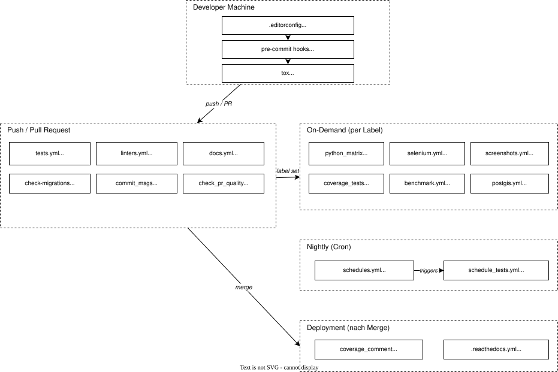

Django - Analyse¶
Django?¶
Django ist ein Python-Web-Framework mit über 30.000 Commits und über 2.000 Contributors. Aufgrund seiner Größe, als eines der größten Open-Source-Projekte, hat es ausgereifte DevOps-Prozesse - etwa eine CI/CD-Infrastruktur -, die sich als Referenzbeispiel eignen.
- Repository: github.com/django/django
- DevOps-Plattform: GitHub Actions
Übersicht - DevOps Workflow¶
Djangos CI/CD-Pipeline ist in fünf Phasen aufgebaut, die aufeinander aufbauen.
Zunächst werden die Änderungen lokal, bevor der Code das Repository erreicht, mittels Tools wie Pre-Commit-Hooks und Tox auf dem Rechner des Entwicklers geprüft.
Nach einem Push oder Pull Request übernimmt weiter GitHub Actions und führt automatisch Tests, Linting und weitere Prüfungen durch.
Aufwändigere Checks - etwa Browser-Tests mit Selenium oder Performance-Benchmarks - laufen nur on-demand, wenn ein entsprechendes Label auf den Pull Request gesetzt ist (z.B. run selenium).
Ergänzend dazu testet ein nächtlicher Cron-Job die gesamte Python-Versionsmatrix, um Regressionen frühzeitig zu erkennen.
Nach einem Merge werden abschließend die Dokumentation deployed und Coverage-Ergebnisse auf dem PR gepostet.

Übersicht - DevOps Konfigurationen¶
| Datei | Typ | Beschreibung |
|---|---|---|
.pre-commit-config.yaml |
Lokales Tooling | Pre-Commit Hooks (black, isort, flake8, biome, zizmor) |
tox.ini |
Lokales Tooling | Lokale Test- und Lint-Umgebung |
.editorconfig |
Lokales Tooling | Editor-übergreifende Formatierungsregeln |
.flake8 |
Konfiguration | Flake8-Linter-Einstellungen |
pyproject.toml |
Konfiguration | Build-Config + Black/isort-Settings |
biome.json |
Konfiguration | JavaScript/CSS Linter + Formatter |
zizmor.yml |
Konfiguration | Sicherheitsscanner für CI-Workflows |
.readthedocs.yml |
Deployment | Read the Docs Konfiguration |
.github/workflows/ |
CI/CD | 17 GitHub Actions Workflows |
.github/pull_request_template.md |
Prozess | Standardisierte PR-Checkliste |
Detailanalysen¶
- Lokale Tools - Pre-Commit, Tox, EditorConfig, Linter-Konfigurationen
- GitHub Workflows - Alle 17 GitHub Actions Workflows im Detail
Prinzipien¶
Django wendet folgende CI/CD-Prinzipien an, die in den Detailanalysen jeweils am konkreten Beispiel erklärt werden:
- Shift Left - Fehler so früh wie möglich finden (Pre-Commit vor CI)
- Least Privilege - Workflows bekommen nur die minimal nötigen Berechtigungen
- Concurrency Control - Alte CI-Runs werden bei neuen Pushes abgebrochen
- Intelligente Filterung - Nur relevante Tests werden getriggert (
paths-ignore,paths) - On-Demand-Testing - Teure Tests (Selenium, Coverage, Benchmarks) nur bei Bedarf per Label
- Matrix-Testing - Tests gegen mehrere Python-Versionen, Betriebssysteme und Datenbanken
- DRY - Python-Versionen werden aus
pyproject.tomlextrahiert statt doppelt gepflegt - Supply-Chain-Security - Actions auf Commit-SHAs gepinnt, zizmor scannt Workflows
- Docs as Code - Dokumentation wird genauso getestet wie Quellcode